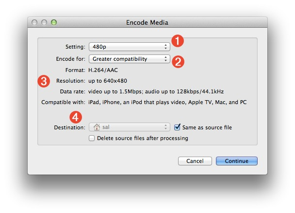
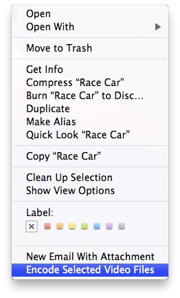
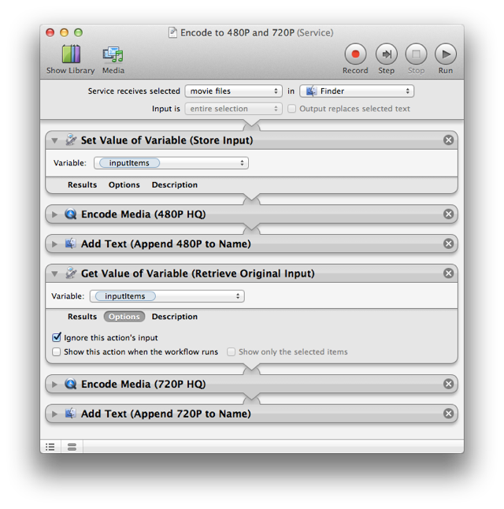

Encode Media
An important aspect of creating video content for distribution, is the encoding of source videos to meet the hardware requirements of various computers and mobile devices. The Encode Media action makes the encoding of video content an easy process, done without requiring the user to have technical knowledge of compression and audio settings.
NOTE: The Encode Media action does not support the encoding of legacy QuickTime content.
The Action Interface
The following outlines the parameters and settings controls available in the action view:
- The
Settings
popup menu (1) offers five options that determine the parameters and vertical sizing of the encoded video: 480P, 720P, 1080P, Audio Only, and Apple ProRes. - The
Encode for
popup menu (2) offers two options that determine the range of devices supported targeted by the chosen encoding settings: Greater quality, and Greater compatibility. Using the compatibility settings produces a lower quality video that is compatible with a larger range of devices. - The particulars of the encoding parameters, determined by the combination of the two popup menus, is displayed below in the action view (3). Output format, data rate, and display size are shown. In addition, the Apple devices that support the chosen encoding parameters are listed for reference.

- The output settings (4) provide options for determining the directory that will contain the encoded files. In addition, an option is provided to delete the source files after they have been processed. Note that the created files retain the base name of their source files, with the appropriate name extension appended to the end of the file name. For example, a source file named
Race Car.mov
might produce an encoded version namedRace Car.m4v
.
What it Does
The Encode Media action accepts one or more video files as input and produces an MPEG encoded video file version of each video file, as a result. If the Audio Only
encoding setting is chosen, an MPEG/AAC audio file version of the audio track of the source movie, is produced.
The Built-in Encoding Service
By default, Mac OS X Lion includes a built-in Automator Service for encoding video files on the desktop. To access the service, simply select one or more video source files in the Finder, and launch the service by selecting it from the Finder's contextual menuaction menu, or Services menu in Finder application menu.

Encoding Movies to Multiple Settings
Using the workflow variables feature of AUtomator, it is possible to create workflows that perform multiple encodings with the movie files that are passed to them.
In the service workflow example below, passed movie files are encoded to both 480P and 720P, producing two encoded files for each movie passed to the workflow. NOTE that the forth action in the workflow (the one that retrieves the original list of dragged-on items from the variable inputItems) has its execution options set to ignore input from the previous action so that it doesn't attempt to process the files already encoded and renamed by the previous actions.

The resulting files:
TRY IT YOURSELF! Download a zip archive of the service workflow shown above. To install, double-click each workflow file and click the Install button in each of the forthcoming dialogs. Once installed, the services will be available from the Finder's contextual menu.